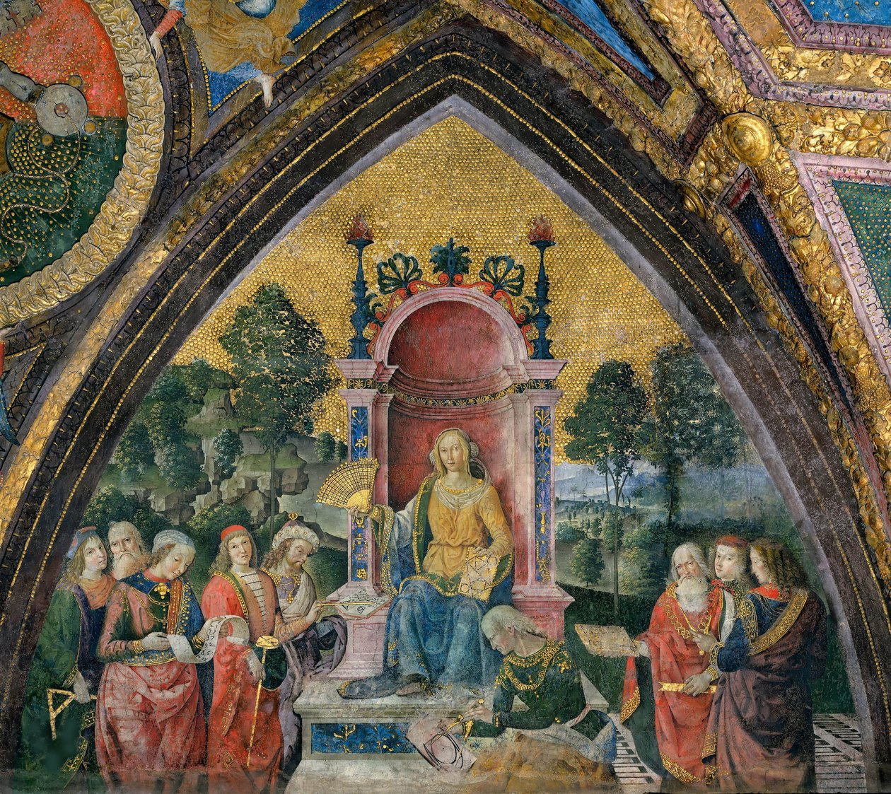
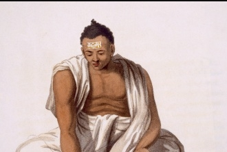
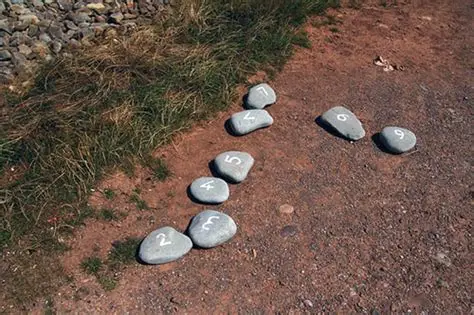
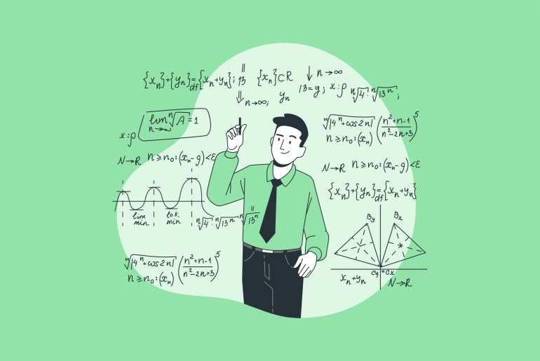

1. Sobre a origem da aritmética, é correto afirmar que:
Acertos: 0/1

2. Qual foi uma das principais contribuições de Brahmagupta para a aritmética?
Acertos: 0/2

3. O exemplo das pedras usadas por pastores para controlar ovelhas representa:
Acertos: 0/3

4. Sobre a importância da aritmética na atualidade, assinale a alternativa correta:
Acertos: 0/4
